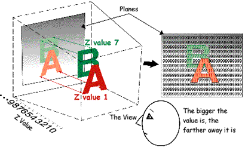

A thread is a single processing unit operating in the CPU. A thread at any one time can have any one of the following four states:
All threads execute in RDRAM under the management of the CPU. In a standard game system, in addition to the threads created by game programmers, the following threads are reserved:
Messages are sent from and received by threads for the purpose of synchronizing information throughput between threads. Messages are managed by the message queue.
A task is a single processing unit operating in the RSP. The RSP in the RCP executes graphics and audio processes. Each process is called a task.
The Scheduler is a high-priority thread that manages all the other threads. It sends messages to registered threads to coordinate their efforts in the CPU. It can also pass control to another thread that manages or decides how to allocate tasks executed on the RCP.

A hardware interrupt is called an event. The application recognizes the event by sending messages to the threads to tell them which event has occurred.
Microcode is executed by RSP concurrently (simultaneously) with CPU processing. There are two basic types of microcode, graphics microcode and audio microcode. For an excellent introduction to the N64 graphics microcode please see the Microcode Introduction in the N64 Function Reference Manual.
Graphics microcde executes the graphics. There is graphics microcode for 2D and for 3D graphics. Graphics microcode analyzes graphics instructions, GBI(Graphics Binary Interface) commands, in 64-bit format and executes them. Two graphics microcodes are provided for 3D. These are for polygon and for line types of graphics. They should be used as appropriate. It also depends uponhow precise the drawing is.
Audio microcode executes the waveform synthesis. It analyzes audio instructions (ABI commands) in 64-bit format, and executes them. Here are two examples of audio microcode:
A GBI command is the pseudo-instruction code for drawing graphics.
The display list is just another name for the graphics command list. It is a string of GBI commands.
An ABI command is the pseudo-instruction code for synthesizing waveforms.
The audio command list is a string of ABI commands used to synthesize waveforms. (It is also called the ABI command list.)
The Z-buffer stores the depth (z coordinate in an x,y,z coordinate system) information. By using the information in the Z-buffer, N64 can draw just those items that are in view; that is, all blocked views are not drawn. In N64, pixels are updated when the Z value is small. In the following illustration, because the Z value of the background is 9, the Z value of the letter B is 7, and the Z value of the letter A is 1, N64 knows that A is in front of (partially blocking) B.
Note that this is just a conceptual illustration. In actual practice, the Z-buffer takes a value between -1.0 and 1.0.
A pixel is a dot on the screen. It is the minimum unit of drawing. A set of these dots becomes image data (the visual image).
DMA is used to directly transfer data from a device to memory (or from memory to a device) without using the CPU. It is an effective way to transfer a lot of data. The advantage of this is that after DMA starts, the CPU can do other processing until the data transfer ends.
Nintendo® Confidential
Copyright © 1999
Nintendo of America Inc. All Rights Reserved
Nintendo and N64 are registered trademarks of Nintendo
Last Updated March, 1999